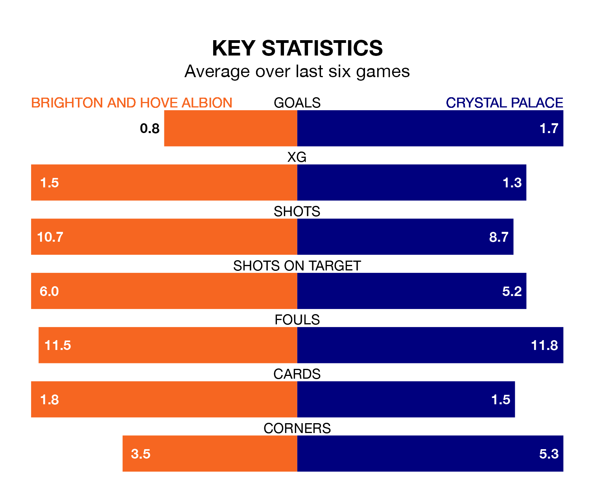

Brighton and Hove Albion are heavy favourites to keep all three points at home in Saturday's kick-off against Crystal Palace.
Brighton, who sit ninth in the Premier League with 22 games played, are priced at 1.6 to seal victory at the American Express Community Stadium.
Sitting six places and eight points behind them in the table, Palace are 4.6 to win with *Betting Company*, while the draw is at 4.1.
In the last 10 years, Brighton and Palace have played each other on 14 occasions. Brighton won four of them, Palace three, and they drew seven times.
On average, Brighton scored 1.2 goals and the Eagles 1.1 in those matches.
Their last meeting was on December 21, when they played out a 1-1 draw.
With 25 goals in 22 games so far this season, Palace are scoring at below the league average rate with 1.1 goals per game. And they are conceding at an average rate, letting in 36 goals at a rate of 1.6 per game.
Brighton, meanwhile, are above average scorers, with 1.7 goals per game, compared to a league average of 1.6. They have also conceded 1.7 goals per game.
Albion are in disappointing form in the Premier League, with one win and three draws from their last six games.
With two wins and two draws over that period, the Eagles's form is slightly better – they have taken eight points from 18, compared to the hosts' six.
Brighton's last match was on Tuesday, a 4-0 loss against Luton Town.
Palace beat Sheffield United 3-2 last time out, also on Tuesday, with Eberechi Eze (two) and Michael Olise on the scoresheet.
Saturday's match will be refereed by Simon Hooper, who has taken charge of 13 Premier League games so far this season, issuing three red cards and booking 67 players. He has not awarded any penalties.
The last Brighton game Hooper refereed was a 1-1 home draw with Burnley on December 9. He is yet to oversee a match featuring Palace this season.
Updated: 14:12 (UTC), 02/02/24